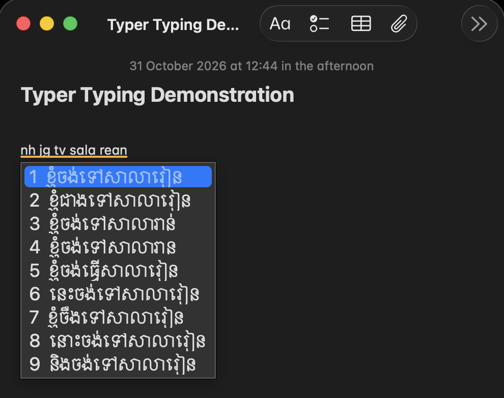
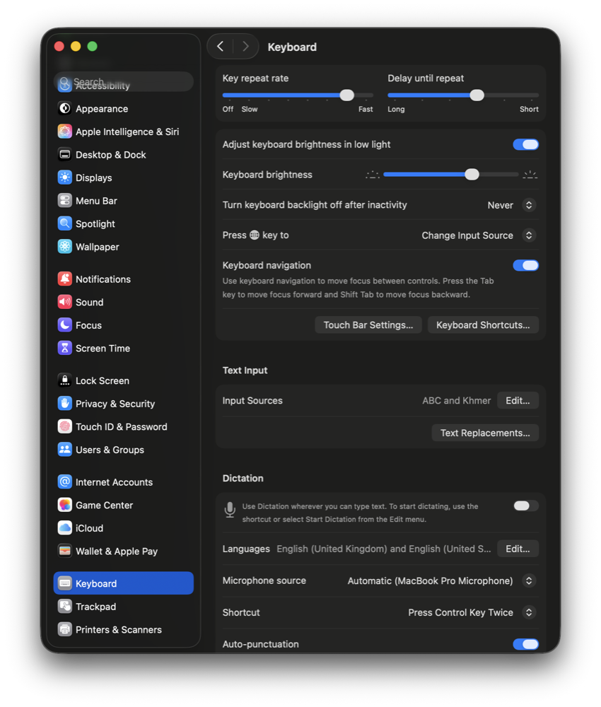
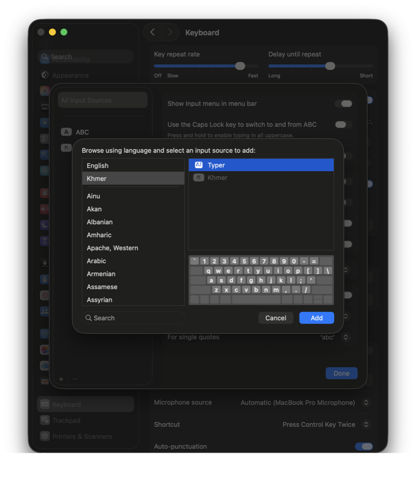
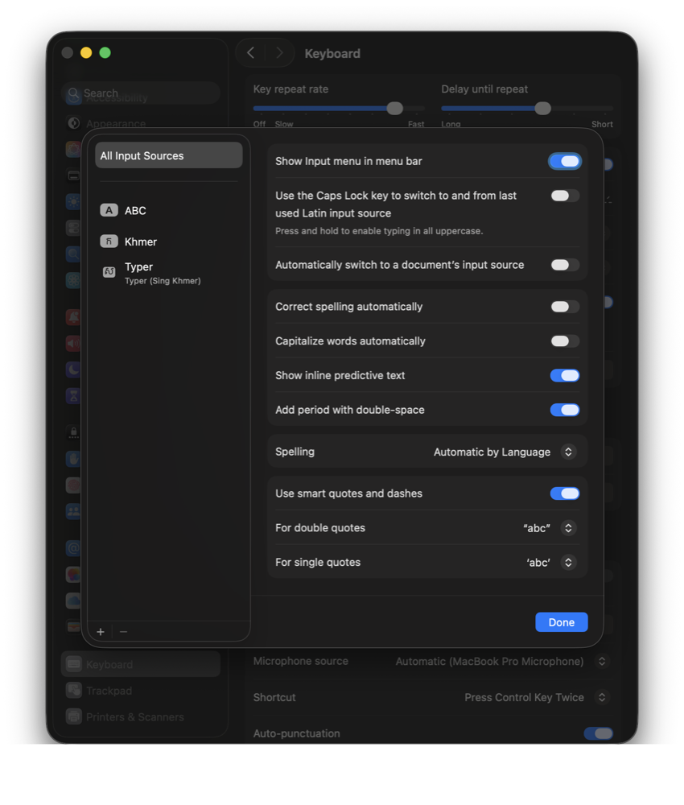
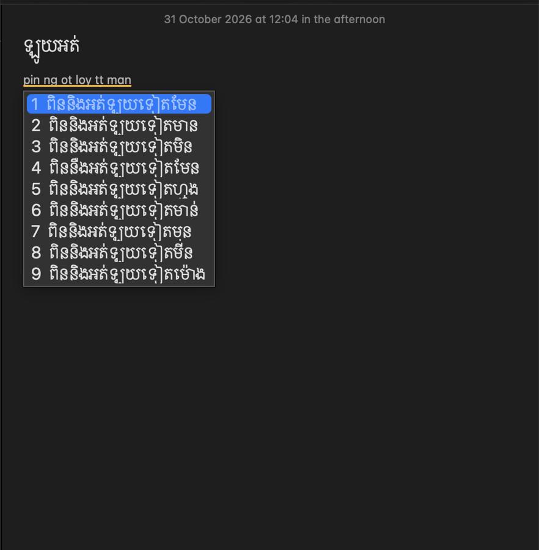

Sing Khmer input · macOS
Typer
Type Khmer the way you already chat: in Latin letters, spelled however you like. Free for macOS.

macOS 13 Ventura or newer · Apple Silicon and Intel · early preview: it will sometimes guess wrong, and it learns from what you pick.
Install
Takes about two minutes. The easiest way is one Terminal command.
1 Copy Typer into place
Open Terminal (press ⌘ Space, type Terminal, press Return). Paste this and press Return:
curl -fsSL -o /tmp/Typer-macos.zip https://github.com/Nel-sokchhunly/typer/releases/latest/download/Typer-macos.zip
mkdir -p ~/Library/Input\ Methods
rm -rf ~/Library/Input\ Methods/Typer.app
ditto -x -k /tmp/Typer-macos.zip ~/Library/Input\ Methods/
xattr -dr com.apple.quarantine ~/Library/Input\ Methods/Typer.app
echo "Typer installed"It downloads Typer and puts it in your Input Methods folder. Nothing is installed anywhere else, and it doesn't need your password.
Prefer to download it yourself?
Click Download for macOS above, then in Terminal run:
cd ~/Downloads
unzip -o Typer-macos.zip
xattr -dr com.apple.quarantine Typer.app
mkdir -p ~/Library/Input\ Methods
rm -rf ~/Library/Input\ Methods/Typer.app
mv Typer.app ~/Library/Input\ Methods/Why the xattr line? Typer isn't signed with a paid Apple Developer certificate yet, so macOS blocks it when it comes from a browser download. This line removes that block for Typer only. Only run it if you trust where you got the file.
2 Open Keyboard settings
Open System Settings → Keyboard. Under Text Input, click Edit… next to Input Sources.

3 Add Typer
Click + at the bottom left. Choose Khmer on the left, select Typer on the right, and click Add.

Typer isn't in the list? Log out and back in (Apple menu → Log Out), then try again.
4 Check it's on
Typer now appears in your input sources. Turn on Show Input menu in menu bar so you can always see which one is active, then click Done.

Use it
Switch to Typer with Ctrl Space or the 🌐 Globe key, or pick it from the input menu in the menu bar.
Type Khmer in Latin letters with spaces between words. Suggestions appear under what you type:

| Return | Insert the highlighted suggestion (the first one unless you moved) |
| ↓ ↑ or Tab | Move through the suggestions |
| 1 to 9, or click | Insert that suggestion |
| Esc | Insert exactly what you typed, in Latin letters |
| Delete | Edit what you're typing |
| . , ? | Insert the first suggestion, then the punctuation |
| Tap Shift | Switch between Khmer and English. A small ខ / EN badge shows the mode |
Tips
- Spell however you normally do.
knhom,knhandnhall give ខ្ញុំ. - When the right word isn't first, pick it. Typer remembers and puts it first next time.
- To type English, tap Shift once; tap it again to go back to Khmer. Holding Shift for a capital letter doesn't switch.
Privacy
Everything stays on your Mac. Typer has no network access and sends nothing anywhere. What you pick is saved locally in ~/Library/Application Support/Typer/ so Typer can learn. Delete that folder at any time to reset it.
Update
Run the step 1 command again. What Typer has learned is kept. If it still behaves like the old version, switch to another input source and back, or log out and back in.
Uninstall
Remove Typer in System Settings → Keyboard → Input Sources → Edit… (select it, click −), then run:
rm -rf ~/Library/Input\ Methods/Typer.app ~/Library/Application\ Support/TyperProblems?
- No suggestions appear: check Typer is selected in the menu bar. You may be in English mode; tap Shift once.
- Typer isn't in the Add list: log out and back in, then try step 3 again.
- Old icon or old behaviour after updating: run
killall -9 TextInputSwitcher TextInputMenuAgentin Terminal (macOS restarts them), or remove Typer from Input Sources and add it again, or log out and back in. - Wrong suggestion: please report it with what you typed and what you expected. These reports are how Typer gets better.